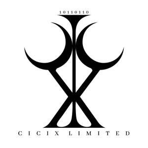

Trade Mark Journal No.2025/026 27 June 2025
UK00004219011 14 June 2025 (3,5)

- Class 3
- Cosmetics; Skincare cosmetics; Moisturisers [cosmetics]; Cosmetics and cosmetic preparations; Hair cosmetics; Skin fresheners [cosmetics]; Cosmetics for eye-lashes; Cosmetics for suntanning; Anti-aging moisturizers used as cosmetics; Organic cosmetics; Non-medicated cosmetics; Nail cosmetics; Lip cosmetics; Skin moisturizers used as cosmetics; Natural cosmetics; Cosmetics preparations; Mousses [cosmetics]; Make-up palettes containing cosmetics; Tanning gels [cosmetics]; Tanning oils [cosmetics]; Cosmetics in the form of lotions; Colour cosmetics; Facial creams [cosmetics]; Beauty care cosmetics; Self-tanning preparations [cosmetics]; Suncare lotions [for cosmetic use]; Cosmetics for animals; Eyebrow cosmetics; Decorative cosmetics; Tanning preparations [cosmetics]; Multifunctional cosmetics; Milks [cosmetics]; Eye cosmetics; Body creams [cosmetics]; After-sun oils [cosmetics]; Skin masks [cosmetics]; Cosmetics for eye-brows; Tanning milks [cosmetics]; Functional cosmetics; Suntan oils [cosmetics]; Facial gels [cosmetics]; Skin care cosmetics; Fluid creams [cosmetics]; Cosmetics for children; Suntan lotion [cosmetics]; Non-medicated cosmetics and toiletry preparations; Humectant preparations [cosmetics]; Emollient preparations [cosmetics]; Cosmetics in the form of creams; Powder compacts [cosmetics]; Sun-tanning preparations [cosmetics]; Cosmetic hair lotions; Suntanning oil [cosmetics]; After-sun milks [cosmetics]; After-sun milk [cosmetics]; Colour cosmetics for the skin; Cosmetics for use on the skin; Cosmetic moisturisers; Sunscreens [for cosmetic use]; Bath powder [cosmetics]; Cosmetic creams and lotions; Skin recovery creams [cosmetics]; Night creams [cosmetics]; Body gels [cosmetics]; Cosmetic products in the form of aerosols for skincare; Sun blocking lipsticks [cosmetics]; Cosmetics for the use on the hair; Body and facial creams [cosmetics]; Lip stains [cosmetics]; Sunscreen [for cosmetic use]; Sunscreen creams [for cosmetic use]; Cosmetic soaps; Creams (Cosmetic -); Cosmetic creams; Body care cosmetics; Cosmetics containing keratin; Cosmetics in the form of powders; Hair care lotions [for cosmetic use]; Cosmetic skin fresheners; Dyes (Cosmetic -); Cosmetic dyes; Cosmetics containing panthenol; Cosmetics in the form of oils; After-sun lotions [for cosmetic use]; Nail paint [cosmetics]; Beauty lotions; Cosmetic facial lotions; Facial lotions [cosmetic]; Cosmetic suntan lotions; Colour cosmetics for children; Nail hardeners [cosmetics]; Skin care lotions [cosmetic]; Perfume oils for the manufacture of cosmetic preparations; Tissues impregnated with cosmetics; Nail tips [cosmetics]; Sun protecting creams [cosmetics]; Cosmetic products for the shower; Anti-aging creams [for cosmetic use]; Nail primer [cosmetics]; Smoothing emulsions [cosmetics]; Anti-ageing creams [for cosmetic use]; Skin cleansers [cosmetic]; Perfumed powders [for cosmetic use]; Liners [cosmetics] for the eyes; Moisturising skin lotions [cosmetic]; Cosmetic creams for the skin; Skin creams [cosmetic]; Skin creams [for cosmetic use]; Body and facial gels [cosmetics]; Skin balms [cosmetic]; Perfumes; Fragrances; Oils for perfumes and scents; Perfumery and fragrances; Perfume; Aromatics for perfumes; Potpourris [fragrances]; Perfume oils; Liquid perfumes; Perfumes for ceramics; Aromatics for fragrances; Colognes; Extracts of perfumes; Scents; Fragrances for automobiles; Extracts of flowers [perfumes]; Flowers (Extracts of -) [perfumes]; Extracts of flowers being perfumes; Natural oils for perfumes; Musk [perfumery]; Fragrance sachets; Perfumes for cardboard; Perfumeries; Perfumery; Household fragrances; Perfumery products; Solid perfumes; Deodorants for personal use [perfumery]; Cedarwood perfumery; Body deodorants [perfumery]; Body fragrances; Perfumed potpourris; Perfumed soaps; Aftershave lotions; Aftershaves; Fumigation preparations [perfumes]; Cologne; Room perfume sprays; Ionone [perfumery]; Room fragrances; Fragrance preparations; Perfume water; Perfumed creams; Perfumed sachets; After-shave lotions; Scented soaps; Fragrance emitting wicks for room fragrance; Scented oils; Fragrance refills for non-electric room fragrance dispensers; Essences for fragrancing; Synthetic perfumery; Fragrance sachets for eye pillows; Perfumed powders; Vanilla perfumery; Aftershave balms; Synthetic vanillin [perfumery]; Perfumed lotions [toilet preparations]; Aromatherapy lotions; Perfuming sachets; Mint for perfumery; Ethereal oils for fragrancing; Scented body lotions and creams; Scented body lotions; Scented sachets; Scented linen sprays; Geraniol for fragrancing; Scented water for fragrancing; Air fragrance preparations; Geraniol fragrancing compounds; Aftershave creams; Room perfumes in spray form; Perfumes for industrial purposes; Roll-on deodorants [toiletries]; Feminine deodorant sprays; Perfumed soap; Sachets for perfuming linen; Linen (Sachets for perfuming -); Pomanders [aromatic substances]; Peppermint oil [perfumery]; Perfumed body lotions [toilet preparations]; Essential oils as perfume for laundry purposes; Natural perfumery; Aromatic potpourris; Eau de cologne [cologne water]; Fragrances for personal use; Incense sachets; Fragrant sachets; Air fragrance reed diffusers; Aftershave; Eau de colognes; Scented body creams; Suncare lotions; Soap; Detergent soap; Deodorant soap; Soap (Deodorant -); Bath soap; Shower soap; Shaving soap; Laundry soap; Soaps; Toilet soap; Antiperspirant soap; Soap (Antiperspirant -); Aloe soap; Liquid soap; Soap powder; Handmade soap; Soap powders; Almond soap; Bars of soap; Creams (Soap -) for use in washing; Bar soap; Cosmetic soap; Skin soap; Waterless soap; Soap products; Liquid soap for laundry; Sugar soap; Liquid bath soap; Loofah soaps; Carbolic soaps; Cakes of soap; Soap (Cakes of -); Liquid soap for dish washing; Saddle soap; Soap sheets; Hand soap; Granulated soap; Dish soaps; Soap pads; Industrial soap; Beauty soap; Bath soaps; Body soap; Toilet soaps; Laundry soaps; Shaving soaps; Cakes of toilet soap; Liquid soaps; Liquid soaps for laundry; Soap solutions; Cakes of soap for body washing; Liquid bath soaps; Cream soaps; Aloe soaps; Body cream soap; Liquid soap used in foot bath; Almond soaps; Soaps and gels; Soap for brightening textile; Non-medicated toilet soaps; Saddle soaps; Liquid soap used in foot baths; Sponges impregnated with soaps; Soap free washing emulsions for the body; Non-medicated soaps; Facial soaps; Soaps for laundry use; Granulated soaps; Hand soaps; Soap for foot perspiration; Foot perspiration (Soap for -); Soaps in gel form; Soaps for toilet purposes; Cakes of soap for household cleaning purposes; Soaps for household use; Soaps in liquid form; Soaps for brightening textiles; Soapy gels; Liquid soaps for hands and face; Washing-up detergent; Refill packs for hand soap dispensers; Bath lotion; Shampoo; Soaps for body care; Pre-moistened towelettes impregnated with dishwashing detergent; Dishwashing detergents; Liquid laundry detergents; Shampoo bars; Powder laundry detergents; Washing balls filled with laundry detergents; Cloths impregnated with a detergent for cleaning; Shaving lotion; Foaming bath gels; Moist paper hand towels impregnated with a cosmetic lotion; Room fragrancing products; Fragrance for household purposes; Refills for electric room fragrance dispensers; Scented room sprays; Room fragrancing preparations; Scented oils used to produce aromas when heated; Room scenting sprays; Perfumed oils for skin care; Air fragrancing preparations; Aromatic oils for the bath; Heliotropin fragrancing compounds; Cleaning sprays; Degreasers for cleaning purposes; Cleaning foam; Laundry detergents for household cleaning use; Wiping cloth impregnated with a cleaning preparation for cleaning eye glasses; Preparation for cleaning dentures; Ammonia for cleaning purposes; Skin cleaning and freshening sprays; Automotive cleaning preparations; Cleaning preparations; Oils for cleaning purposes; Dry cleaning preparations; Chemical cleaning preparations for household purposes; Carpet cleaning preparations; Foam cleaning preparations; Vehicle cleaning preparations; Starch for cleaning purposes; Wipes impregnated with a cleaning preparation; Cleaning pads impregnated with cosmetics; Household cleaning substances; Cleaning preparations for cleansing drains; Cleaning and fragrancing preparations; Cleaning substances for household use; Detergent compositions for cleaning shoes; Washing soda, for cleaning; Automobile cleaning preparations; Hair cleaning preparations; Cleansing lotions; Furniture cleaner; Kettle cleaner; Hand cleaner; Windshield cleaner fluids; Cleaner for cosmetic brushes; Carpet cleaners; Toilet cleaners; Upholstery cleaners; Chrome cleaners; Window cleaners [polish]; Glass cleaners; Spray cleaners for household use; Oven cleaners; Litter tray cleaners incorporating a deodorizer; Automobile cleaners; Whitewall cleaners; Emulsifying solvent cleaners; Windshield cleaning liquids; Windscreen cleaning liquids; Window cleaners in spray form; Dry cleaning fluids; Cleaners for litter trays; Jasmine oil; Lavender oil for cosmetic use; Rose oil; Body oil spray; Bath oil; Shaving oil; Hair oil; Oil of turpentine for degreasing; Rosemary oil for cosmetic use; Citronella oil for cosmetic use; Massage oil; Cleansing oil; Pine oil; Eucalyptus oil for cosmetic use; Cuticle oil; Body oil; Body oil [for cosmetic use]; Baby oil; Facial oil; Beard oil; Mineral oils [cosmetic]; Lotions for cosmetic purposes; Cosmetic masks; Tonics [cosmetic]; Facial creams [cosmetic]; Facial creams [for cosmetic use]; Cosmetic powder; Cosmetic preparations; Facial cleansers [cosmetic]; Cosmetic pencils; Pencils (Cosmetic -); Cosmetic kits; Kits (Cosmetic -); Facial moisturisers [cosmetic]; Anti-wrinkle creams [for cosmetic use]; Lacquer for cosmetic purposes; Pro-collagen for cosmetic purposes; Facial cream [for cosmetic use]; Henna for cosmetic purposes; Serums for cosmetic purposes; Collagen for cosmetic purposes; Cosmetic skin enhancers; Cosmetic tanning preparations; Cosmetic rouges; Cleansing creams [cosmetic]; Facial scrubs [cosmetic]; Self-tanning preparations [cosmetic]; Facial toners [cosmetic]; Pomades for cosmetic purposes; Lip coatings [cosmetic]; Skin cream [for cosmetic use]; Skin whitening preparations [cosmetic]; Anti-ageing serums for cosmetic purposes; Anti-wrinkle cream [for cosmetic use]; Toning creams [cosmetic]; Cosmetic sun-protecting preparations; Astringents for cosmetic purposes; Cosmetic facial masks; Facial masks [cosmetic]; Glitter for cosmetic purposes; Cosmetic sunscreen preparations; Facial washes [cosmetic]; Toners for cosmetic purposes; Lip stains for cosmetic purposes; Facial packs [cosmetic]; Cosmetic facial packs; Geraniol for cosmetic purposes; Cosmetic nail preparations; Cosmetic massage creams; Cosmetic suntan preparations; Retinol cream for cosmetic purposes; Eyelashes (Cosmetic preparations for -); Cosmetic preparations for eyelashes; Cosmetic hand creams; Skin toners [cosmetic]; Skin hydrators for cosmetic purposes; Procollagen for cosmetic purposes; Skin care creams [cosmetic]; Cosmetic creams for skin care; Pencils for cosmetic purposes; Cosmetic eye gels; Gels for cosmetic purposes; Hair care creams [for cosmetic use]; Exfoliating scrubs for cosmetic purposes; Cosmetic sun-tanning preparations; Hair tonics [for cosmetic use]; Tooth powders [for cosmetic use]; Cosmetic preparations for slimming purposes; Slimming purposes (Cosmetic preparations for -); Self tanning creams [cosmetic]; Cosmetic nourishing creams; Skin care (Cosmetic preparations for -); Cosmetic preparations for skin care; Ointments for cosmetic use; Skin conditioning creams for cosmetic purposes; Moisturising gels [cosmetic]; Suntan oils for cosmetic purposes; Moisturising concentrates [cosmetic]; Self tanning lotions [cosmetic]; Cotton for cosmetic purposes; Softening cleanser [cosmetic]; Essences for cosmetic purposes; Cosmetic face powders; Face powders [for cosmetic use]; Cosmetic eye pencils; Lint for cosmetic purposes; Artificial nails for cosmetic purposes; Sun creams [for cosmetic use]; Removable tattoos for cosmetic purposes; Dusting powder [for toilet use]; Dusting powder; Carpet shampoo; Talcum powder; Scrubbing powder; Talcum powder [for toilet use]; Powder for make-up; Make-up powder; Powder (Make-up -); Laundry powder; Bath powder; Washing powder; Hair powder; Talcum powder [for cosmetic use]; Hair-washing powder; Perfumed powder; Baby powder; Talcum powder, for toilet use; Dishwasher powder; Body talcum powder; Cosmetic white face powder; Talcum powders; Face powder; Nail polishing powder; Perfumed powder [for cosmetic use]; Tooth powder; Dentifrice powder; Talcum powders [for cosmetic use]; Face powder [for cosmetic use]; Face dusting powders; Loose face powder; Eyebrow powder; Toilet powders; Carpet freshening preparations; Creamy face powder; Skin lotion; Facial lotion; Hair lotion; Body lotion; Sunscreen lotions; Moisturising body lotion [cosmetic]; Moisturizing body lotions; After-sun lotions; Suntan lotions; Skin cleansing lotion; Baby lotion; Moisturising creams, lotions and gels; Shaving lotions; Hand lotion (Non-medicated -); Sun-block lotions; Skin lotions; Lotions for the skin; Sun tan lotion; Body mask lotion; Moisture body lotion; Aftershave moisturising cream; Depilatory lotions; Day lotion; Moisturizing creams; Sun-tanning creams and lotions; Bathing lotions; Sunscreen creams; Non-medicated skin lotions; Skin moisturizer; Massage oils and lotions; Facial lotions; Suntan creams [self-tanning creams]; Moist wipes impregnated with a cosmetic lotion; Cosmetic sun milk lotions; Body lotions; Sunscreen cream; Suntan creams; Bath lotions (Non-medicated -); Hair lotions; Sun-tanning lotions; Moisturiser; Moisturizers; After-sun creams; Moisturising creams; Non-medicated skin clarifying lotions; Aftershave balm; Baby lotions; Mattifying gel cream; Hand lotions; Skin moisturizers; Non-medicated hair lotions; Non-medicated lotions; Skin moisturiser; Moisturising skin creams [cosmetic]; Exfoliant creams; Skin moisturizer masks; Pre-shave creams; Milky lotions for skin care; Non-medicated stimulating lotions for the skin; Shaving balm; Creams for tanning the skin; After-shave gel; Shower creams; Skin moisturisers; Toning lotion, for the face, body and hands; Exfoliating creams; Moisturisers; Skin cleansing cream [non-medicated]; Blemish balm creams; Styling lotions; Hair protection lotions; Emollient shampoos; Shaving creams; Face and body lotions; Shaving balms; Beauty balm creams; Facial moisturizers; Moisturizing milk; Bath creams; Non-medicated skin creams; Skin creams [non-medicated]; Hair shampoo; Dandruff shampoo; Shampoos; Hair shampoos; Waterless shampoo; Baby shampoo; Baby shampoo mousse; Non-medicated hair shampoos; Dry shampoos; Shampoo for animals; Waterless shampoos; Shampoos for human hair; Car shampoos; Hair conditioner; Non-medicated shampoos; Pet shampoos; Hair moisturising conditioners; Baby hair conditioner; Hair moisturizers; Hair moisturisers; Body shampoos; Hair conditioner bars; Shampoos for babies; Non-medicated pet shampoos; Hair rinses; Hair gel; Vehicle shampoos; Hair rinses [shampoo-conditioners]; Shampoos for pets; Pets (Shampoos for -); Hair rinses [for cosmetic use]; Hair conditioners; Hair styling lotions; Hair balm; Colouring lotions for the hair; Hair spray; Hair gels; Hair sprays; Mousses [toiletries] for use in styling the hair; Hair emollients; Refill packs for shampoo dispensers; Non-medicated balm for hair; Hair balms; Hair styling gel; Hair pomades; Hair serums; Oils for hair conditioning; Hair care lotions; Hair balsam; Hair mascara; Hair tonic [non-medicated]; Conditioners for treating the hair; Shampoos for vehicles; Hair tonic; Hair mousse; Hair tonic [for cosmetic use]; Hair styling gels; Styling gels for the hair; Hair oils; Hair texturizers; Hair creams; Styling sprays for the hair; Hair conditioners for babies; Hair styling spray; Hair tonics; Hair strengthening treatment lotions; Shampoos for pets [non-medicated grooming preparations]; Hair relaxers; Shower and bath gel; Bath and shower gel; Dandruff shampoos, not for medical purposes; Conditioners in the form of sprays for the scalp; Hair cream; Toothpaste; Shower gel; Hair bleaches; Gels for fixing hair; Bath and shower oils [non-medicated]; Laundry detergents; Laundry balls filled with laundry detergents; Laundry balls containing laundry detergent; Laundry bleach; Laundry starch; Bluing for laundry; Laundry liquids; Blueing for laundry; Laundry blueing; Blueing (Laundry -); Laundry preparations; Laundry sizing; Laundry additives; Commercial laundry detergents; Laundry blue; Biological laundry detergents; Laundry wax; Wax (Laundry -); Laundry fabric conditioner; Laundry glaze; Glaze (Laundry -); Rinsing agents for laundry; Fabric softener for laundry; Starch for laundry purposes; Powder for laundry purposes; Fabric softeners for laundry; Laundry soaking preparations; Preparations for soaking laundry; Soaking laundry (Preparations for -); Bleaching preparations [laundry]; Laundry bleaching preparations; Fabric softener for laundry use; Chemical laundry preparations; Softeners (Fabric -) for laundry use; Fabric softeners for laundry use; Substances for laundry use; Bleaching preparations for laundry use; Color run prevention laundry sheets; Laundry preparations for attracting dirt; Colour run prevention laundry sheets; Colour-brightening chemicals for household purposes [laundry]; Color-brightening chemicals for household purposes [laundry]; Starch glaze for laundry purposes; Laundry preparations for attracting dyes; Laundry additives for water softening; Natural starches for laundry purposes; Dishwasher detergents; Detergents for machine dishwashing; Bleaching preparations and other substances for laundry use; Cleaning fluids; Drain cleaning preparations; Cleaning chalk; Chalk (Cleaning -); Oven cleaning preparations; Preparations for cleaning teeth; Cleaning preparations for the teeth; Preparations for cleaning the teeth; Car cleaning preparations; Floor cleaning preparations; Cloths impregnated with polishing preparations for cleaning; Glass cleaning preparations; Wallpaper cleaning preparations; Piperonal fragrancing compounds; Potpourris; Geraniol for cosmetic use; Breath freshener; Breath fresheners; Skin fresheners; Breath fresheners for animals; Breath fresheners, not for medical use; Mouth [breath] fresheners, not for medical use; Breath fresheners in the form of chew sticks made from birchwood extracts; Odour fresheners for animals; Breath freshening sprays; Scented wood; Incense; Incense spray; Scented body spray; Cushions filled with perfumed substances; Ethereal essences and oils; Cushions impregnated with perfumed substances; Perfuming preparations for the atmosphere; Bath salts; Shower and bath foam; Bath and shower foam; Bubble bath; Bath and shower preparations; Shower and bath preparations; Preparations for use in the bath or shower; Preparations for the bath and shower; Bath and shower gels; Bath gel; Bath cream; Bath milk; Bath oils; Bath bombs; Bath gels; Non-medicated bath salts; Cosmetic bath salts; Foams for the bath; Bath foams; Bath crystals; Bath foam; Foam bath; Bath beads; Bath herbs; Bath flakes; Baby bubble bath; Bath preparations; Preparations for the bath; Cosmetic preparations for bath and shower; Bath pearls; Bubble bath preparations; Bubble bath [for cosmetic use]; Baby bath mousse; Bath crystals (Non-medicated -); Bubble baths; Bath foams (Non-medicated -); Non-medicated bath oils; Bath oils (Non-medicated -); Foam bath preparations; Bath creams (Non-medicated -); Bath gels (Non-medicated -); Bath soak for cosmetic use; Non-medicated bubble bath preparations; Foaming bath liquids; Bath pearls (Non-medicated -); Bubble bath preparations [for cosmetic use]; Bath powders (Non-medicated -); Non-medicated bath preparations; Bath preparations (Non-medicated -); Shower gels; Shower cream; Shower oils; Foams for use in the shower; Shower foams; Shower preparations; Preparations for the shower; Non-medicated shower oils; Bath and shower gels, not for medical purposes; Refill packs for shower gel dispensers; Reed diffusers; Scented fabric refresher spray; Scented fabric refresher sprays; Gel sprays being styling aids; Aromatherapy pillows comprising potpourri in fabric containers; Scented water; Scented bathing salts; Scented pine cones; Scented linen water; Scented toilet waters; Scented wax melts; Scented ceramic stones; Perfumed tissues; Perfumed water; Cushions impregnated with fragrant substances; Perfumed toilet waters; Cushions filled with fragrant substances; Lavender gel; Synthetic musk; Aromatherapy creams; Cologne water; Salt crystal removers; Bath crystals, not for medical use; Toilet cleaning gels; Teeth cleaning lotions; Cleaning agents for glass; Pre-moistened towelettes impregnated with a detergent for cleaning; Feminine hygiene cleansing towelettes; Aftershave gels; Aftershave milk; Aftershave emulsions; Aftershave preparations; After-shave preparations; Shaving sets, comprised of shaving cream and aftershave; Anti-perspirant deodorants; Eau de Cologne; Eau de cologne; Eaux de Cologne; Eaux de cologne; Shaving sprays; Cologne impregnated disposable wipes; Pre-shave foams; Shave balm; Pre-shave gels; Shave creams; Lotions for beards; Beard balm; Mouthwash; Deodorants and antiperspirants; Shaving oils; Foot deodorant spray; Anti-perspirant preparations; Anti-perspirants; Shaving gel; Pre-shaving lotions; Personal deodorants; Hair fixing oil; Beard dyes; Combing oil; Tints for the beard; Facial oils; Sun tan oil; Horse oil cream for skin care; Moustache wax; Wax (Moustache -); Mustache wax; Face oils; Anti-wrinkle cream; Shaving cream; Anti-aging cream; Skin cream; Facial cream; Lip cream; Cuticle cream; Cold cream; Eye cream; Cleansing cream; Shoe cream; Hand cream; Base cream; Camouflage cream; Nail cream; Body cream; Cream foundation; Cream for whitening the skin; Whitening the skin (Cream for -); Day cream; Boot cream; Night cream; Face cream (Non-medicated -); Nappy cream [non-medicated]; Skin cleansing cream; Anti-wrinkle creams; Wrinkle resistant cream; Cream cleaners (Non-medicated -); Hair removing cream; Body mask cream; Non-medicated massage preparations; Distilled oils for beauty care; Skin care oils [non-medicated]; Aromatherapy preparations; Massage oils; Facial massage oils; Body massage oils; Massage candles for cosmetic purposes; Massage oils, not medicated; Bath oils for cosmetic purposes; Non-medicated oils; Essential oils; Cosmetic sun oils; Sun-tanning oils; Massage waxes; Body spray; Spray cleaners for freshening athletic mouth guards; Spray cleaners for use on textiles; Makeup setting sprays; Body sprays; Anti-perspirants in the form of sprays.
- Class 5
- Car air freshener; Car air fresheners; Air deodoriser sprays; Air deodorising and air purifying preparations; Air deodoriser gel; Deodorising room sprays; Aromatic deodorisers for toilets; Deodorizers for toilets; Deodorizing room sprays; Pet odour neutraliser; Antiseptic cleansers; Shoe deodorizers; Antibacterial handwashes; Deodorisers for litter trays; Disinfectant soap; Urinal screen mats impregnated with sanitizing and deodorizing preparations; Anti-microbial handwash; Carpet deodorizers; Toilet deodorants; Anti-bacterial soap; Disinfecting handwash; Antiseptic mouthwashes for rinsing; Deodorizers for litter trays; Antibacterial handwash; Fabric deodorizers; Antibacterial lathering cleanser; Antibacterial sprays; Germicidal detergents; Antiseptic mouthwashes; Cleaning cloths impregnated with disinfectant for hygiene purposes; Washes (disinfectant -) [other than soap]; Medicated and sanitising soaps and detergents; Fabric deodorisers; Deodorizers for garbage disposals; Disinfectant swabs; Deodorants for upholstery; Anti-allergy sprays; Antibacterial soap; Antibacterial wipes; Disinfectants for chemical toilets; Bathroom deodorants; Antibacterial facial cleanser; Alcohol-based antibacterial skin sanitizer gels; Antiseptic sprays in aerosol form for use on the skin; Pet odor neutralizer; Antibacterial mouthwashes; Deodorizing preparations for carpets; Antiseptic ointments; Anti-insect spray; Refrigerator deodorants; Anti-insect sprays; Wipes impregnated with disinfectants for hygiene purposes; Disinfectant dressings; Moist wipes impregnated with a pharmaceutical lotion; Disinfectants and antiseptics; Disposable sanitising wipes; Air deodorizing preparations comprised of activated charcoal; Aromatic deodorizers for toilets; Oil of turpentine for pharmaceutical purposes; Pharmaceutical preparations for animal skincare; Car deodorants; Automobile deodorizers; Disposable house training pads for pets; Smelling salts; Mosquito-repellent incense; Therapeutic medicated bath preparations; Extracts of medicinal herbs; Impregnated antiseptic wipes.
CICIX LIMITED